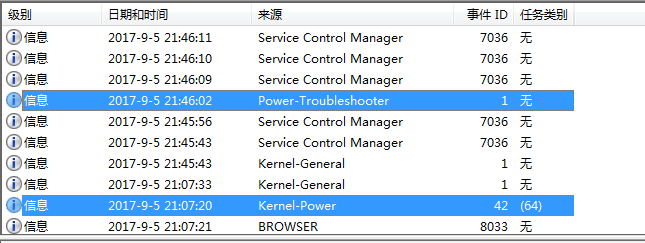
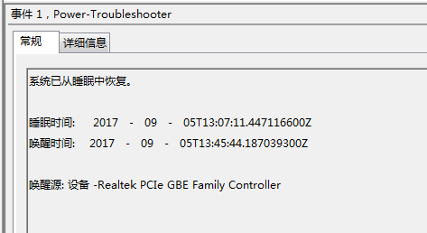

Windows自动唤醒问题
早上到公司发现电脑是开着的，记得下班的时候是休眠的，为什么自己开了呢。打开事件查看器，发现了问题所在。

电脑只休眠了不到一个小时就自动唤醒了(好像暴露了加班狗的属性)。
事件查看器显示唤醒电脑的是音频设备。估计跟电脑开着音乐有关系。

网上搜了下解决方案，有说从设备管理器就可以禁掉设备自动唤醒电脑，但是我从设备管理器并没有找到这个电源管理的选项。
不过也有第二种方案，直接通过命令行来禁止。首先列出支持唤醒电脑的设备：
E:\playerground>powercfg -devicequery wake_armed
HID-compliant mouse (001)
Realtek PCIe GBE Family Controller
HID Keyboard Device
果然发现了肇事者。果断禁掉：
E:\playerground>powercfg -devicedisablewake "Realtek PCIe GBE Family Controller"
再列举一下：
E:\playerground>powercfg -devicequery wake_armed
HID-compliant mouse (001)
HID Keyboard Device
发现音频设备不见了，问题解决。要把它加回来也容易，把disable改成enable就可以了。
E:\playerground>powercfg -deviceenablewake "Realtek PCIe GBE Family Controller"